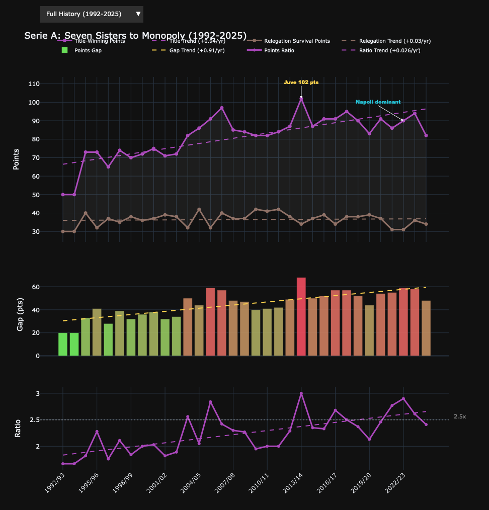

import sys
from pathlib import Path
sys.path.insert(0, str(Path.cwd().parent))
from _utils import (
LEAGUES, scrape_league, enrich_dataframe,
build_league_chart, build_comparison_chart, build_frequency_tables,
)
import pandas as pd
import numpy as np
import plotly.graph_objects as goSerie A: From Seven Sisters to Juve’s Nine
Italian football’s collapse and partial recovery
Eric Schnitger, 2026
Key Findings
- Seven Sisters (1992-2006): 5 different champions
- Calciopoli (2006) broke the old order
- Juventus 2012-2020: nine consecutive titles
- Post-Juve: Inter (2021, 2024), Milan (2022), Napoli (2023)
config = LEAGUES["serie_a"]
df = scrape_league("serie_a", cache_dir="../data")
df = enrich_dataframe(df)
print(f"Loaded {len(df)} seasons")
df.tail(10) [SA] scraping 1992-2025...
1992/93... OK
1993/94... OK
1994/95... OK
1995/96... OK
1996/97... OK
1997/98... OK
1998/99... OK
1999/00... OK
2000/01... OK
2001/02... OK
2002/03... OK
2003/04... OK
2004/05... OK
2005/06... OK
2006/07... OK
2007/08... OK
2008/09... OK
2009/10... OK
2010/11... OK
2011/12... OK
2012/13... OK
2013/14... OK
2014/15... OK
2015/16... OK
2016/17... OK
2017/18... OK
2018/19... OK
2019/20... OK
2020/21... OK
2021/22... OK
2022/23... OK
2023/24... OK
2024/25... OK
[SA] cached 33 seasons, 0 failures
Loaded 33 seasons| Season | Start Year | Num Teams | Matches | Champion | Title-Winning Points | 2nd Place | 2nd Place Points | 3rd Place | 3rd Place Points | ... | Relegated 2 | Relegated 3 | Gap | Ratio | Title PPG | Survival PPG | Gap PPG | Title Pts (38-game) | Survival Pts (38-game) | Gap (38-game) | |
|---|---|---|---|---|---|---|---|---|---|---|---|---|---|---|---|---|---|---|---|---|---|
| 23 | 2015/16 | 2015 | 20 | 38 | Juventus | 91 | Napoli | 82 | Roma | 80 | ... | Frosinone | Hellas Verona | 52 | 2.33 | 2.395 | 1.026 | 1.369 | 91.0 | 39.0 | 52.0 |
| 24 | 2016/17 | 2016 | 20 | 38 | Juventus | 91 | Roma | 87 | Napoli | 86 | ... | Palermo | Pescara | 57 | 2.68 | 2.395 | 0.895 | 1.500 | 91.0 | 34.0 | 57.0 |
| 25 | 2017/18 | 2017 | 20 | 38 | Juventus | 95 | Napoli | 91 | Roma | 77 | ... | Hellas Verona | Benevento | 57 | 2.50 | 2.500 | 1.000 | 1.500 | 95.0 | 38.0 | 57.0 |
| 26 | 2018/19 | 2018 | 20 | 38 | Juventus | 90 | Napoli | 79 | Atalanta | 69 | ... | Frosinone | Chievo | 52 | 2.37 | 2.368 | 1.000 | 1.368 | 90.0 | 38.0 | 52.0 |
| 27 | 2019/20 | 2019 | 20 | 38 | Juventus | 83 | Internazionale | 82 | Atalanta | 78 | ... | Brescia | SPAL | 44 | 2.13 | 2.184 | 1.026 | 1.158 | 83.0 | 39.0 | 44.0 |
| 28 | 2020/21 | 2020 | 20 | 38 | Inter Milan | 91 | Milan | 79 | Atalanta | 78 | ... | Crotone | Parma | 54 | 2.46 | 2.395 | 0.974 | 1.421 | 91.0 | 37.0 | 54.0 |
| 29 | 2021/22 | 2021 | 20 | 38 | Milan | 86 | Inter Milan | 84 | Napoli | 79 | ... | Genoa | Venezia | 55 | 2.77 | 2.263 | 0.816 | 1.447 | 86.0 | 31.0 | 55.0 |
| 30 | 2022/23 | 2022 | 20 | 38 | Napoli | 90 | Lazio | 74 | Inter Milan | 72 | ... | Cremonese | Sampdoria | 59 | 2.90 | 2.368 | 0.816 | 1.552 | 90.0 | 31.0 | 59.0 |
| 31 | 2023/24 | 2023 | 20 | 38 | Inter Milan | 94 | Milan | 75 | Juventus | 71 | ... | Sassuolo | Salernitana | 58 | 2.61 | 2.474 | 0.947 | 1.527 | 94.0 | 36.0 | 58.0 |
| 32 | 2024/25 | 2024 | 20 | 38 | Napoli | 82 | Inter Milan | 81 | Atalanta | 74 | ... | Venezia | Monza | 48 | 2.41 | 2.158 | 0.895 | 1.263 | 82.0 | 34.0 | 48.0 |
10 rows × 25 columns
Interactive Analysis
eras = [
{"label": "Full History (1992-2025)",
"start": df["Season"].iloc[0], "end": df["Season"].iloc[-1],
"title": "Serie A: Seven Sisters to Monopoly (1992-2025)"},
{"label": "Seven Sisters (1992-2006)",
"start": "1992/93", "end": "2005/06",
"title": "Serie A: The Seven Sisters"},
{"label": "Juve Dynasty (2011-2020)",
"start": "2011/12", "end": "2019/20",
"title": "Serie A: Juventus's Nine"},
{"label": "Post-Juve (2020-2025)",
"start": "2020/21", "end": df["Season"].iloc[-1],
"title": "Serie A: Post-Juve"},
]
notable = [
("2013/14", "Juve 102 pts", "#FFD54F", 0, -25),
("2022/23", "Napoli dominant", "#26C6DA", -50, -30),
]
outliers = []
for season, text, color, ax, ay in notable:
match = df[df["Season"] == season]
if not match.empty:
outliers.append({
"season": season,
"y": int(match["Title-Winning Points"].iloc[0]),
"text": text, "color": color, "ax": ax, "ay": ay,
})fig = build_league_chart(df, config, eras=eras, outliers=outliers)
fig
Top 4 Concentration
top4, relegated = build_frequency_tables(df, config)
top4.head(10).style.format({"Percentage": "{:.1f}%"}).hide(axis="index")| Club | Top 4 Finishes | Percentage |
|---|---|---|
| Juventus | 28 | 84.8% |
| Milan | 21 | 63.6% |
| Internazionale | 16 | 48.5% |
| Lazio | 13 | 39.4% |
| Roma | 13 | 39.4% |
| Napoli | 10 | 30.3% |
| Inter Milan | 7 | 21.2% |
| Fiorentina | 7 | 21.2% |
| Atalanta | 6 | 18.2% |
| Parma | 5 | 15.2% |
Relegated Clubs
relegated.head(10).style.hide(axis="index")| Club | Times Relegated |
|---|---|
| Lecce | 7 |
| Empoli | 6 |
| Atalanta | 4 |
| Venezia | 4 |
| Hellas Verona | 4 |
| Brescia | 4 |
| Torino | 3 |
| Sampdoria | 3 |
| Cagliari | 3 |
| Frosinone | 3 |